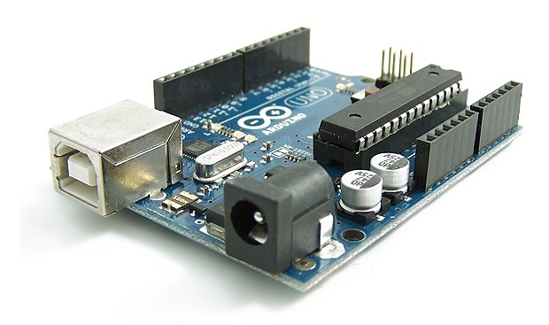

Introducción a la plataforma Arduino

¿Que es Arduino?
Arduino es una plataforma de hardware libre que fue diseñada para facilitar el uso de la electrónica en proyectos de todo tipo. Está basada en una placa con un microcontrolador Atmel AVR y varios puertos de entrada y salida.
Los proyectos basados en Arduino estan siendo muy populares ultimamente, gracias a su bajo coste y a la posibilidad de poder construirse de forma propia (comprando los materiales necesarios) o adquirlos ya montados (movimiento Maker o Do It Yourself).
El entorno de programación también es libre, admite un gran numero de lenguajes, lo cual permite mayor facilidad de introducirse en la plataforma. Solo se necesitan unos conocimientos basicos de programación y de electrónica para empezar.
El microcontrolador de la placa se programa usando el Arduino Programming Language (basado en Wiring) y el Arduino Development Environment (basado en Processing). Los proyectos de Arduino pueden ser autonomos o se pueden comunicar con software en ejecución en un ordenador. Las placas se pueden ensamblar a mano o encargarlas preensambladas; el software se puede descargar gratuitamente. Los diseños de referencia del hardware (archivos CAD) están disponibles bajo licencia open-source, por lo que eres libre de adaptarlos a tus necesidades.
¿Por qué Arduino?
Arduino simplifica el proceso de trabajo con microcontroladores y ofrece algunas ventajas sobre otros sistemas:
Coste: las placas arduino son relativamente baratas comparadas con otras plataformas microcontroladoras
Multiplataforma: El software de Arduino se ejecuta en sistemas operativos Windows, Mac OSX y GNU/Linux. La mayoría de los sistemas microcontroladores están limitados a Windows.
Entorno de programación simple: El entorno de programación de Arduino es fácil de usar para principiantes, pero sufientemente flexible para que usuarios avanzados puedan aprovecharlo también. Para profesores, está convenientemente basado en el entorno de programación Processing, de manera que estudiantes que conozcan ese entorno estarán familiarizados con el aspecto y la imagen de Arduino.
Código abierto y software extensible: El software Arduino está publicado como herramientas de código abierto. El lenguaje puede ser expandido mediante librerias C++, y la gente que quiera entender los detalles técnicos pueden hacer el salto desde Arduino a la programación en lenguaje AVR C en el cual está basado. De forma similar, puedes añadir código AVR-C directamente en tus programas Arduino si quieres.
Código abierto y hardware extensible: El Arduino está basado en microcontroladores ATMEGA8 y ATMEGA168 de Atmel. Los planos para los módulos están publicados bajo licencia Creative Commons, por lo que diseñadores experimentados de circuitos pueden hacer su propia versión del módulo, extendiéndolo y mejorándolo. Incluso usuarios relativamente inexpertos pueden construir la versión de la placa del módulo para entender como funciona y ahorrar dinero.